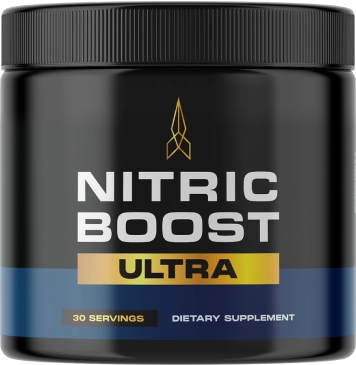
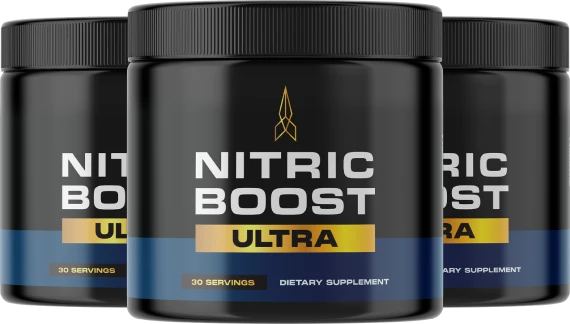

Official Pricing
Choose Your Nitric Boost Ultra Package
One-time payment · No subscription · No hidden charges

2 Bottles
60-Day Supply
$79 / bottle
Total: $158
Plus shipping
- 2 bottles of Nitric Boost Ultra
- 60-day money-back guarantee
- Secure checkout
60-Day Money-Back Guarantee · Secure Checkout
Most Popular

3 Bottles
90-Day Supply
$69 / bottle
Total: $207
Free shipping
- 3 bottles of Nitric Boost Ultra
- 60-day money-back guarantee
- Secure checkout
60-Day Money-Back Guarantee · Secure Checkout
Best Value

6 Bottles
180-Day Supply
$49 / bottle
Total: $294
Free shipping
- 6 bottles of Nitric Boost Ultra
- 60-day money-back guarantee
- Secure checkout
60-Day Money-Back Guarantee · Secure Checkout
Note: If you're new to nitric oxide powders, the 2-bottle tier is a low-commitment way to test it, while the 6-bottle package is the better per-bottle deal if you plan to use it consistently.